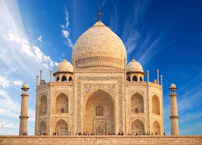
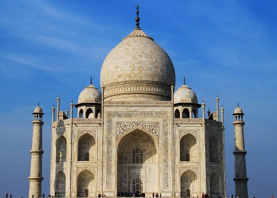
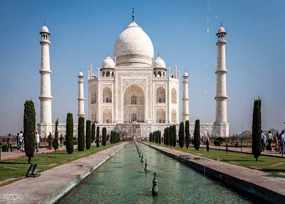
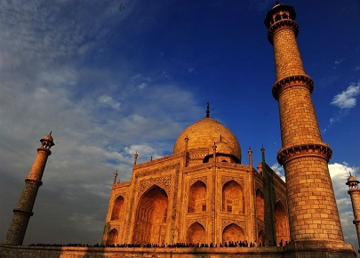

morly旅游网
泰姬陵是“永恒面颊上的一滴眼泪”
泰姬陵全称为“泰姬·玛哈拉”，是一座白色大理石建成的巨大陵墓清真寺，是莫卧儿皇帝沙贾汗为纪念他心爱的妃子于1631年至1653年在阿格拉而建的。位于今印度距新德里200多公里外的北方邦的阿格拉(Agra)城内，亚穆纳河右侧。由殿堂、钟楼、尖塔、水池等构成，全部用纯白色大理石建筑，用玻璃、玛瑙镶嵌，具有极高的艺术价值。
泰姬陵因爱情而生，这段爱情的生命也因泰姬陵的光彩被续写，光阴轮回，生生不息。尽管有人说，沙贾汗只是一个好大喜功的暴君，根本不是多情种子；尽管有人说，泰姬陵美轮美奂的脚下，不知堆砌着多少人的鲜血乃至生命。但是我们似乎更愿意相信这世上真的有情深意重的男子，有穿越时空的思恋，有生死相随的爱情。泰姬陵依然超越着简单的建筑学意义，默默地美丽着，不为别的，只为世人心中那一点对爱情的美好向往。
泰姬陵是沙·贾汗为纪念他第二任妻子穆塔兹·马哈尔修建的。1631年马哈尔死泰姬陵于他们的第十四个孩子出生之后，时年39岁。 沙·贾汗极度伤心，据说一夜间白了头发。同年这座陵墓动工修建，当时的许多工匠都是来自欧洲。直到1653年这座陵墓才被建成。当然耗资巨大。有传说，沙·贾汗曾想在河对岸修建一座和泰姬陵一样的黑色大理石的陵墓，但因他晚年遭儿子囚禁，所以这个愿望没能实现。
阿姬曼·芭奴，这个来自波斯的女子，美丽聪慧，多才多艺，入宫19年，用自己的生命见证了沙·贾汗的荣辱征战。沙杰汗封她为“泰姬·玛哈尔”，意为“宫廷的皇冠”，可谓是三千宠爱在一身。可惜的是，不论中外，自古红颜多薄命，泰姬在生下第14个孩子后香消玉殒。死讯传来，沙·贾汗竟然一夜白头。于是，一个悲痛的丈夫，动用了王室的特权，倾举国之力，耗无数钱财，用22年的时间为爱妻写下了这段瑰丽的绝响。正如美国著名作家马克·吐温所说，爱情的力量在这里震撼了所有的人。1632年，泰姬陵在沙杰汗选中的印度北部亚穆纳河转弯处的大花园内开始动工兴建。此处位于亚穆纳河下游，十分空旷，沙杰汗可以从河上游的阿格拉城堡上远远地望见。建筑学和珠宝最受沙杰汗喜爱，因此，他选用大理石建造泰姬陵，并以十分精巧的手艺在大理石上镶嵌无数宝石作装饰。本国以及波斯、土耳其、巴格达的建筑师、镶嵌师、书法师、雕刻师、泥瓦工共计两万多人参与了泰姬陵的建设。此工程选用了本国的大理石，中国的宝石、水晶、玉和绿宝石，巴格达和也门的玛瑙，斯里兰卡的宝石，阿拉伯的珊瑚等。1653年（也有人说是1654年），泰姬陵建成。时至今日，已经300多年了，但它的辉煌和气派依然未减。来到泰姬陵，一座高30米、用红沙岩落成、顶部有座八角亭的十分气派的拱门展现在眼前，其大理石结构十分突出，上面镶嵌有美丽的花朵，配以优美的书法。
 莫卧儿式花园
此花园是一个典型的波斯式花园(Persian garden)，位于主体前方，中央有一水道喷泉，而且有两行并排的树木把花园划分成4个同样大小的长方型，因为“4”字在伊斯兰教中有著神圣与平和的意思。
清真寺
在主体两旁各有一座清真寺，以红砂岩建筑而成，顶部是典型的白色圆顶，而兴建这两座清真寺的主要目的，是为了维持整座泰姬陵建筑的平衡效果，以达到对称之美。
 内容整理至网络，如有侵权，请联系我们！1255394075@qq.com